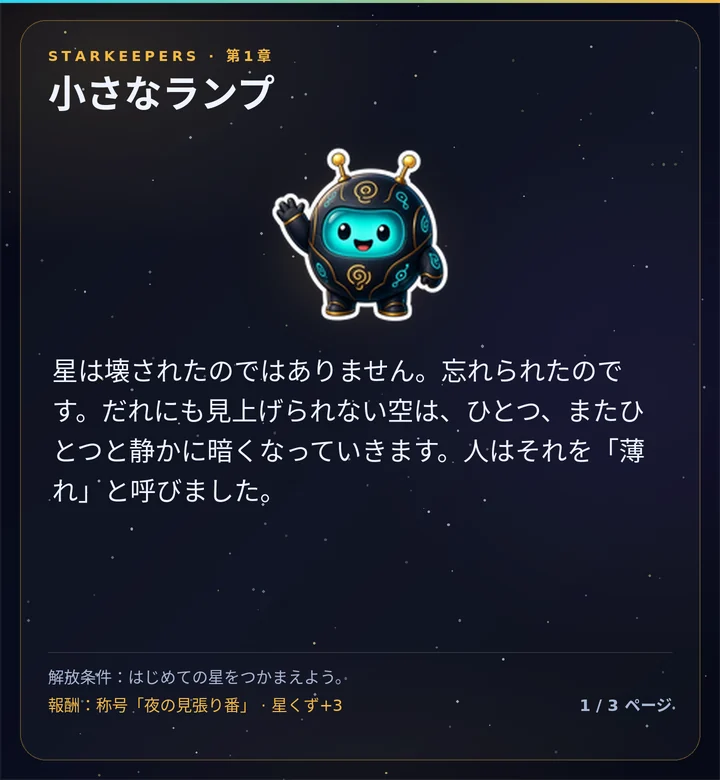

世界の物語
ストーリー
星は壊されたのではなく、忘れられただけ。だれにも見上げられない空は、少しずつ暗くなっていきます。小さなランプロボットのLumoはランタンを灯し続け、全8章と幕間でその物語を語ります。
- 章は、あなたとサーバーが遊ぶほど開いていきます。はじめての星、最初に灯った星座、新しい地域、日食など。
- どの章でも称号がもらえ、新しい背景がもらえる章もあります。
/sky storyで読めます。
